소방설비산업기사(전기) (2007-05-13 기출문제)
1과목: 소방원론
1. 위험물의 유별 성질에 관한 연결 중 옳지 않은 것은?
- 제2류위험물 - 가연성 고체
- 제4류위험물 - 인화성 액체
- 제5류위험물 - 자기반응성 물질
- 제6류위험물 - 산화성고체
(정답률: 82%)

2. 다음 중 방호구조가 아닌 것은?
- 두께 1.2m 이상의 석고판 위에 석면시멘트판을 붙인 것
- 석고판 위에 회반죽을 바른 것으로 그 두께의 합계가 2.0cm 이상인 것
- 심벽에 흙으로 맞벽치기 한 것
- 철망모르타르로서 그 바름두께가 2cm 이상인 것
(정답률: 25%)
3. 적린의 착화 온도는 약 몇 ℃ 인가?
- 34
- 157
- 200
- 260
(정답률: 60%)
4. 연소속도와 가장 관련이 있는 것은?
- 기화속도
- 산화속도
- 착화속도
- 환원속도
(정답률: 65%)
5. 내화구종의 기준에서 바닥의 경우 철골콘크리트조로서 두께가 몇 cm 이상인 것이 내화구조에 해당하는가?
- 3
- 5
- 10
- 15
(정답률: 80%)
6. 플래쉬 오버(flash over) 현상이란 어떤 것을 말하는가?
- 역화현상
- 탱크 밖으로 기름이 분출되는 현상
- 연소의 급속한 확대현상
- 외부에서의 연소현상
(정답률: 80%)
7. 안전사고의 원인으로 가장 거리가 먼 것은?
- 인체적, 기계적 악조건
- 작업자의 불완전한 행동
- 무의식적인 사고와 행동
- 작업자의 침묵
(정답률: 88%)
8. 가연성 기체 또는 액체의 연소범위에 대한 설명 중 틀린 것은?
- 연소 하한과 연소 상한의 범위를 나타낸다.
- 연소 하한이 낮을수록 발화위험이 높다.
- 연소 범위가 넓을수록 발화위험이 낮다.
- 복원중
(정답률: 69%)
9. CO2의 증기비중은 약 얼마인가?
- 1.5
- 1.9
- 28.8
- 44.1
(정답률: 56%)
10. 공기 중 산소의 농도를 낮추어 화재를 진압하는 소화방법에 해당하는 것은?
- 부촉매소화
- 냉각소화
- 제거소화
- 질식소화
(정답률: 88%)
11. 다음 중 증기비중이 가장 큰 물질은?
- CH4
- CO
- C6H6
- SO2
(정답률: 71%)
12. 불꽃의 색깔에 의한 온도를 측정하였을 때 낮은 온도에서부터 높은 온도의 순서로 나열 한 것은?
- 암적색, 백적색, 황적색, 휘백색
- 휘백색, 암적색, 백적색, 황적색
- 암적색, 황적색, 백적색, 휘백색
- 암적색, 휘백색, 황적색, 백적색
(정답률: 78%)
13. 다음 중 A 급 화재에 속하는 것은?
- 목재, 섬유화재
- 석유, 액화가스 화재
- 금속화재
- 전기화재
(정답률: 90%)
14. 물은 소화약제로서 중요한 역할을 한다. 일반적으로 물의 증발잔열은 약 몇 cal/g 인가?
- 79
- 538
- 750
- 810
(정답률: 83%)
15. 화재원인이 되는 정전기 발생 방지법 중 틀린 것은?
- 상대습도를 높인다.
- 공기를 이온화 시킨다.
- 접지시설을 한다.
- 가능한 한 부도체를 사용한다.
(정답률: 66%)
16. 계단을 대신하여 사용하는 경사로를 설치할 경우 경사도는 얼마를 넘지 아니하여야 하는가?
- 1:2
- 1:4
- 1:6
- 1:8
(정답률: 32%)
17. 복사에 관한 Stefan-Boltzmann의 법칙에서 흑체의 단위표면적에서 단위 시간에 내는 에너지의 총량은 절대온도의 얼마에 비례하는가?
- 제곱근
- 제곱
- 3제곱
- 4제곱
(정답률: 76%)
18. 위험물질의 자연발화를 방지하는 방법이 아닌 것은?
- 열의 축적을 방지할 것
- 저장실의 온도를 저온으로 유지할 것
- 촉매 역할을 하는 물질과 접촉을 피할 것
- 습도를 높일 것
(정답률: 81%)
19. 다음 중 주된 연소형채가 분해연소인 것은?
- 나프탈렌
- 목재
- 목탄
- 양초
(정답률: 64%)
20. 연소의 3요소에 해당하지 않는 것은?
- 접화에너지
- 가연물
- 공기
- 촉매
(정답률: 75%)
2과목: 소방전기회로
21. 저임피던스 부하에서 고전류 이득을 얻으려고 할 때 사용되는 증폭방식은?
- 그디르접지
- 베이스접지
- 이미터접지
- 컬렉터접지
(정답률: 54%)
22. 저항 20[Ω], 유도리액턴스 10[Ω], 용량리액턴스 10[Ω]으로 된 직렬회로에 전압 100[v]를 인가하는 경우, 이 회로에 흐르는 전류와 위상각은?
- 3[A], 0[rad]
- 3[A], π[rad]
- 5[A], 0[rad]
- 5[A], π[rad]
(정답률: 50%)
23. 그림과 같이 직렬로 접속된 2개의 코일에 10[A]의 전류를 흘릴 때 결합된 합성코일에 발생하는 에너지는 몇 [J]인가? (단, L1, L2는 100[mH], 결합계수는 0.7 이다.)
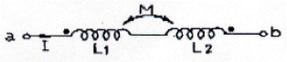
- 1
- 2
- 3
- 4
(정답률: 36%)
24. 소용량의 3상 유동전동기의 과부하 보호로 가장 많이 사용되는 것은?
- 접지계전기
- 거리계전기
- 비율차동계전기
- 열동계전기
(정답률: 61%)
25. 10[KVA]의 변압기 2대로 공급할 수 있는 최대의 3상전력을 약 몇 [KVA]인가?
- 10
- 14.1
- 17.3
- 20
(정답률: 74%)
26. 그림과 같은 회로의 명칭은?
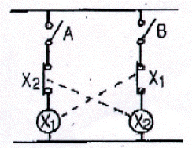
- 정지우선 자기유지회로
- 한시접점회로
- 인터록회로
- 플립플룹회로
(정답률: 63%)
27. 비례적분(PI)제어 동작의 특징에 해당되는 것은?
- 간헐 현상이 있다.
- 응답의 안전성이 작다.
- 응답의 진동시간이 길다.
- 잔류 편차가 생긴다.
(정답률: 38%)
28. 교류를 직류로 변환하는 기기가 아닌 것은?
- 수은정류기
- 서보모터
- 회전변류기
- 전동발전기
(정답률: 37%)
29. 그림과 같은 회로에서 ab 간의 합성저항은?
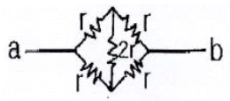
- r
- 2r
- 3r
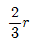
(정답률: 46%)
30. R의 저항에 V의 전압을 인가해서 전류 I가 흐를 때 저항 R에서 소비되는 전력을 P라고 할 때 다음 중 옳지 않은 것은?(오류 신고가 접수된 문제입니다. 반드시 정답과 해설을 확인하시기 바랍니다.)
- R이 일정하면 P는 I2에 비례한다.
- V이 일정하면 P는 R에 비례한다.
- R이 일정하면 P는 V에 비례한다.
- V이 일절하면 P는 I에 비례한다.
(정답률: 33%)
31. 공기중에 200[A]의 전류가 흐르는 도체와 직선거리로 0.5[m] 떨어진 곳에서의 자기장의 세기는 약 몇 [AT/m] 인가?
- 7.96
- 15.9
- 31.8
- 63.7
(정답률: 24%)
32. 다음 반도체 소자 중 부저항 특성을 갖지 않는 것은?
- 정류다이오드
- 트라이악(TRIAC)
- UJT
- 사이리스터
(정답률: 55%)
33. 그림과 같은 회로에서 C접점을 흐르는 전류 I0는 몇 [A]인가?
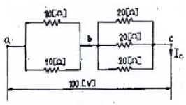
- 7.6
- 8.6
- 9.6
- 10.6
(정답률: 57%)
34. 직류 500[V]의 절연저항계로 절연저항을 측정하니 2[MΩ]이 되었다면 누설전류는 몇 [μA]인가?
- 0.25
- 2.5
- 25
- 250
(정답률: 36%)
35. R=1[Ω],
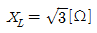
인 R L직렬회로에서 위상차는 몇 도인가?- 30
- 45
- 60
- 75
(정답률: 33%)
36. 목표값이 시간적으로 변화하지 않고 일정한 값을 유지하는 경우의제어를 무슨 제어라 하는가?
- 추종제어
- 정치제어
- 비율제어
- 시퀀스제어
(정답률: 77%)
37. V=70sinwt[V]로 나타낸 교류전압을 유도리액턴스 5[Ω]에 가할 때 흐르는 전류를 나타내는 식은?
- 14sin2wt
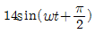
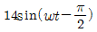
- 14sin(wt+π)
(정답률: 49%)
38. 그림과 같은 회로에서 다이오드 양단의 전압 VD는 몇 [V]인가? (단, 이상적인 다이오드 이다.)
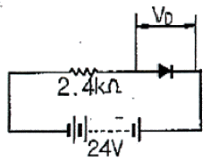
- 0
- 2.4
- 10
- 24
(정답률: 69%)
39. 정전용량 50[μF]의 콘덴서에 200[V], 60[Hz]의 사인파 전압을 가하는 경우에 용량 리액턴스 Xo는 약 몇 [Ω]인가?
- 53
- 106
- 159
- 212
(정답률: 32%)
40. 그림과 같은 회로망에 있어서 전류를 산출하는데 옳지 않는 것은?
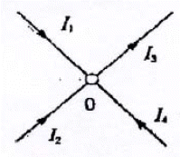
- I1+I2+I3+I4=0
- I1+I2-I3+I4=0
- I1+I4=I3-I2=0
- I1+I2+I4=I3
(정답률: 45%)
3과목: 소방관계법규
41. 관할소방서장의 승인을 받아 지정수량 이상의 위험물을 임시로 저장ㆍ취급 할 수 있는 기간은 몇 일 이내이어야 하는가?
- 30
- 60
- 90
- 120
(정답률: 60%)
42. 주거지역, 상업지역 및 공업지역이 아닌 곳에 설치하는 소방용수시설은 소방대상물과 수평거리를 몇 [m] 이하가 되도록 설치하여야 하는가?
- 100
- 140
- 180
- 200
(정답률: 39%)
43. 소방시설업자의 지위를 승계하고자 한다. 다음 중 그 절차로서 알맞은 것은?
- 소방본부장 또는 소방서장에게 등록하여야 한다.
- 소방본부장 또는 소방서장에게 신고하여야 한다.
- 시ㆍ도지사에게 등록하여야 한다.
- 시ㆍ도지사에게 신고하여야 한다.
(정답률: 53%)
44. 방화대상물의 관계인이 방화관리자를 선임한 경우에는 선임한 날로부터 몇 일 이내에 소방본부장 또는 소방서장에게 신고하여야 하는가?
- 10
- 14
- 20
- 30
(정답률: 55%)
45. 단독경보형감지기를 설치하여야 하는 특정소방대상물에 대한 기준으로 옳은 것은?
- 연면적 500m2 미만의 숙박시설
- 연면적 500m2 미만의 기숙사
- 연면적 1000m2 미만의 아파트
- 교육연구시설 내에 있는 합숙소 또는 기숙사로서 연면적 100m2 미만인 것
(정답률: 69%)
46. 소방본부장 또는 소방서장은 소방검사를 하고자 할 때에는 몇 시간 전에 관계인에게 알려야 하는가?
- 12
- 24
- 36
- 48
(정답률: 59%)
47. “무창층” 이라함은 지상층 중 개구부의 면적의 합계가 당해 층의 바닥면적의 얼마 이하가 되는 층을 말하는가?
- 10분의 1
- 20분의 1
- 30분의 1
- 50분의 1
(정답률: 55%)
48. 위험물안전관리법상 제1류 위험물의 성질은?
- 산화성 액체
- 가연성 고체
- 금수성 물질
- 산화성 고체
(정답률: 83%)
49. 하자보수를 하여야 하는 소방시성 중 하자보수 보증기간이 3년이 아닌 것은?
- 자동식소화기
- 비상방송설비
- 상수도소화용수설비
- 스프링클러설비
(정답률: 69%)
50. 연면적이 1500m2인 지하가 (터널을 제외)에 설치하지 않아도 되는 소방시설은?
- 스프링클러설비
- 옥외소화전설비
- 제연설비
- 무선통신보조설비
(정답률: 39%)
51. 다음 중 화재경계지구의 지정대상이 아닌 것은?
- 대형화재 및 대형재난 발생지역
- 공장ㆍ창고가 밀집한 지역
- 목조건물이 밀집한 지역
- 위험물저장 및 처리시설이 밀집한 지역
(정답률: 68%)
52. 다중이용업소에 설치해야 할 소방시설이 아닌 것은?
- 소화기 또는 자동확산소화용구
- 방화설비
- 피난기구
- 비상벨설비 또는 비상방송설비
(정답률: 42%)
53. 소방대상물의 관계인이 실시하는 소방훈련이 아닌 것은?
- 소화훈련
- 구조훈련
- 피난훈련
- 통보훈련
(정답률: 53%)
54. 소방자동차의 출동을 방해한 자에 대한 벌칙에 대한 기준으로 옳은 것은?
- 5년 이하의 징역 또는 3천만원 이하의 벌금
- 3년 이하의 징역 또는 1천5백만원 이하의 벌금
- 1년 이하의 징역 또는 1천만원 이하의 벌금
- 300만원 이하의 벌금
(정답률: 56%)
55. 다음 중 화재 경계지구의 지정대상지역 등에 대한 설명 중 옳지 않은 것은?
- 위험물 처리시설이 밀집한 지역은 대상이 된다.
- 소방용수시설 또는 소방출동로가 있는 지역은 대상이 된다.
- 소방본부장은 소방대상물의 위치ㆍ구조 및 설비 등에 대한 소방검사를 연 1회 이상 실시하여야 한다.
- 소방서장은 소방훈련을 실시하고자 하는 때에는 화재경계지구 안의 관계인에게 훈련 10일 전까지 그 사실을 통보하여야 한다.
(정답률: 66%)
56. 다음 중 소방기본법에 의한 소방용어의 정의 중 옳지 않은 것은?
- “소방대상물” 이라 함은 건축물, 차량, 선박, 선박건조 구조물, 산림 그 밖의 공작물 또는 물건을 말한다.
- “관계지역” 이라 함은 소방대상물이 있는 장소 및 그 이웃지역으로서 화재의 예방ㆍ경계ㆍ진압, 구조ㆍ구급 등의 활동에 필요한 지역을 말한다.
- “관계인” 이라 함은 소방대상물의 소유자ㆍ관리자 또는 취급자를 말한다.
- “소방대장” 이라 함은 소방본부장 또는 소방서장 등 화재, 재난ㆍ재해 그 밖의 위급한 상황이 발생한 현장에서 소방대를 지휘하는 자를 말한다.
(정답률: 57%)
57. 위험물 제조소에는 보기 쉬운 곳에 기준에 따라 “위험물 제조소” 라는 표시를 한 표지를 설치하여야 하는데 다음 중 표지의 기준으로 적합한 것은?
- 표지의 한변의 길이는 0.3m 이상, 다른 한변의 길이는 0.6m 이상인 직사각형으로 하되 표지의 바탕은 백색으로 문자는 흑색으로 한다.
- 표지의 한변의 길이는 0.2m 이상, 다른 한변의 길이는 0.4m 이상인 직사각형으로 하되 표지의 바탕은 백색으로 문자는 흑색으로 한다.
- 표지의 한변의 길이는 0.2m 이상, 다른 한변의 길이는 0.4m 이상인 직사각형으로 하되 표지의 바탕은 흑색으로 문자는 백색으로 한다.
- 표지의 한변의 길이는 0.3m 이상, 다른 한변의 길이는 0.6m 이상인 직사각형으로 하되 표지의 바탕은 흑색으로 문자는 백색으로 한다.
(정답률: 60%)
58. 특정소방대상물 중 근린생활시설에 속하지 않는 것은?
- 찜질방
- 박물관
- 치과병원
- 산후조리원
(정답률: 56%)
59. 가연성액체류의 수량이 몇 m2 이상의 경우 화재의 확대가 빠른 특수가연물로 보는가?
- 1
- 2
- 10
- 20
(정답률: 29%)
60. 소방시설관리업의 등록기준 중 이산화탄소소화설비의 장비기준이 아닌 것은?
- 토크렌치
- 절연저항계
- 캡 스퍼너
- 전류전압측정계
(정답률: 43%)
4과목: 소방전기시설의 구조 및 원리
61. 다음 중 비상방송설비의 설치하는 축전지설비의 기준으로 알맞은 것은?
- 감시상태를 20분간 지속 후 유효하게 20분 이상 경보할 수 있을 것
- 감시상태를 30분간 지속 후 유효하게 20분 이상 경보할 수 있을 것
- 감시상태를 50분간 지속 후 유효하게 10분 이상 경보할 수 있을 것
- 감시상태를 60분간 지속 후 유효하게 10분 이상 경보할 수 있을 것
(정답률: 84%)
62. 비상콘센트는 바닥으로부터 몇 [m] 높이에 설치하여야 하는가?(관련 규정 개정전 문제로 여기서는 기존 정답인 2번을 누르면 정답 처리 됩니다. 자세한 내용은 해설을 참고하세요.)
- 0.8[m]이상 1.0[m]이하
- 1[m]이상 1.5[m]이하
- 0.8[m]이상 1.5[m]이하
- 1[m]이상 1.8[m]이하
(정답률: 35%)
63. 연기가 다량으로 유입할 우려가 있는 장소에 적합하지 않은 감지기는?
- 불꽃감지기
- 열아날로그식감지기
- 보상식스포트형감지기
- 차동식스포트형감지기
(정답률: 56%)
64. 다음 중 연기감지기 설치기준에 대한 설명으로 알맞은 것은?
- 감지기는 복도 및 통로에 있어서는 보행거리 20[m](3종에 있어서는 10[m])마다 설치한다.
- 계단 및 경사로에 있어서는 수직거리 15[m](3종에 있어서는 10[m])마다 1개 이상으로 설치한다.
- 감지기는 벽 또는 보로부터 1[m]이상 떨어진 곳에 설치한다.
- 천장 또는 반자가 낮은 실내 좁은 실내에 있어서는 출입구의 먼 부분에 설치한다.
(정답률: 50%)
65. 휴대용비상조명등의 충전식 밧데리의 용량은 몇 분 이상 유효하게 사용할 수 있는 것으로 하여야 하는가?
- 10
- 20
- 30
- 60
(정답률: 54%)
66. 비상경보설비의 화재안전기준에서 자동식 사이렌설비에 대한 서명 중 거리가 먼 것은?
- 지구음향장치는 소방대상물의 층마다 설치한다.
- 음향장치는 정격전압 80[%]전압에서 음향을 발할 수 있도록 하여야 한다.
- 자동식사이렌설비는 화재방생상황을 사이렌 또는 경종으로 경보하는 설비이다.
- 음향장치의 음량은 부착된 음향장치의 중심으로부터 1[m] 떨어진 위치에서 90폰 이상이 되도록 하여야 한다.
(정답률: 56%)
67. 무선통신보조설비에서 무선기기 접속단자의 설치기준으로 옳지 않은 것은?
- 지상에서 유효하게 소방활동을 할 수 있는 장소 또는 수위실등 상시 사람이 근무하고 있는 장소에 설치할 것
- 단자는 바닥으로부터 높이 0.8[m]이상 1.5[m]이하의 위치에 설치할 것
- 지상에 설치하는 무선기기 접속단자는 보행거리 300[m]이내마다 설치하고 다른 용도로 사용되는접속단자에서 3[m]이상의 거리를 둘 것
- 단자의 보호함의 표면에 “무선기 접속단자” 라고 표시한 표지를 할 것
(정답률: 57%)
68. 소방대상물 중 화재신호를 발신하고 그 신호를 수신 및 유효하게 제어할 수 있는 구역을 무엇이라고 하는가?
- 감지구역
- 경계구역
- 탐지구역
- 방호구역
(정답률: 62%)
69. 통로의 직선 길이가 22[m]인 장소에 서리하여야 하는 객석유도등의 설치 개수는?
- 2개
- 3개
- 4개
- 5개
(정답률: 37%)
70. 다음 중 자동화재탐지설비의 감지기회로에 종단저항을 설치하는 목적으로 가장 적합한 것은?
- 도통시험을 하기 위하여
- 작동시험을 하기 위하여
- 전원상태를 확인하기 위하여
- 작동중인 감지기를 쉽게 확인하기 위하여
(정답률: 80%)
71. 다음 중 자동화재탐지설비의 하나의 경계구역의 면적과 한 변의 길이에 대한 기준으로 옳은 것은?
- 면적 : 600[m2]이하, 길이 : 50[m]이하
- 면적 : 1000[m2]이하, 길이 : 60[m]이하
- 면적 : 1200[m2]이하, 길이 : 70[m]이하
- 면적 : 1500[m2]이하, 길이 : 90[m]이하
(정답률: 63%)
72. 지하층을 제외한 층수가 11층 이상의 층인 소방대상물의 경우 그 부분에서 피난층에 이르는 부분의 비상조명등은 몇 분 이상 유효하게 작동시킬 수 있는 용량으로 하여야 하는가?
- 20
- 30
- 60
- 120
(정답률: 63%)
73. 공연장ㆍ집회장ㆍ관람장ㆍ운동시설에 설치할 수 유도등으로 다음 중 기준에 적합하지 않은 것은?
- 중형 피난구유도등
- 통로유도등
- 객석유도등
- 대형 피난구유도등
(정답률: 63%)
74. 바닥면적 620[m2]인 실(實)에 설치하여야 할 단독경보형 감지기의 최소 개수는?
- 1개
- 3개
- 4개
- 5개
(정답률: 55%)
75. 공기간식 차동식분포형감지기의 하나의 검출부분에 접속하는 공기관의 길이는 몇 [m]이하이여야 하는가?
- 6
- 20
- 50
- 100
(정답률: 47%)
76. 지하구 또는 터널에 설치하는 자동화재탐지설비의 하나의 경계구역의 길이는 몇 [m]이하로 하여야 하는가?
- 700
- 1000
- 1200
- 1500
(정답률: 60%)
77. ( ㉠ ), ( ㉡ )에 알맞은 것은?
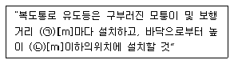
- ㉠ 20, ㉡ 1.5
- ㉠ 20, ㉡ 1
- ㉠ 15, ㉡ 1.5
- ㉠ 15, ㉡ 1
(정답률: 57%)
78. 다음 중 누전경보기의 수신부를 설치할 수 있는 장소로 적합한 장소는? (단, 누전경보기는 방폭ㆍ방식ㆍ방습ㆍ방온ㆍ방진 및 정전기 차폐등의 방호조치를 하지 아니하는 경우이다.)
- 화약류를 저장 또는 취급하는 장소
- 가연성증기 또는 먼지 등이 다량으로 체류하는 장소
- 습도가 높은 장소
- 온도의 변화가 완만한 장소
(정답률: 80%)
79. 비상방송설비에서 확성기의 음성입력은 몇 와트[W]이상이어야 하는가?
- 3
- 5
- 7
- 10
(정답률: 69%)
80. 자동화재속보기는 자동화재탐지설비로부터 작동신호를 수신하거나 수동으로 동작시키는 경우 몇 초 이내에 소방서에 자동적으로 신호를 발하여 통보하여야 하는가?
- 10
- 15
- 20
- 30
(정답률: 42%)